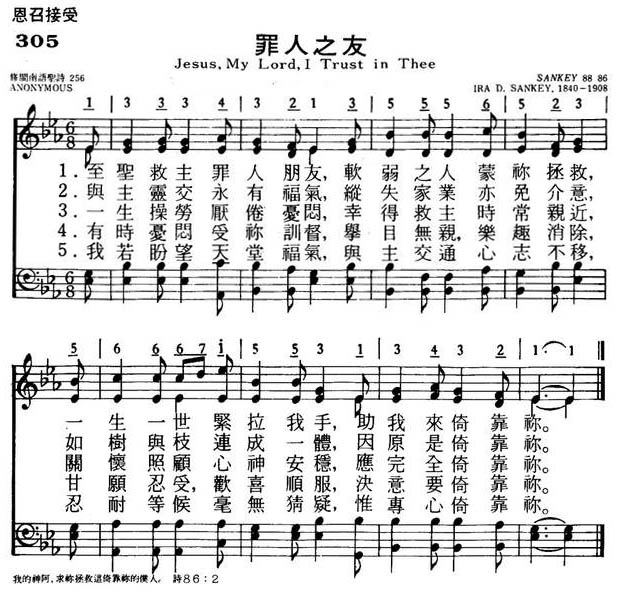
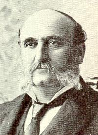
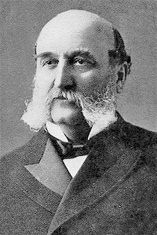

|
|
颂主新歌 |
|
NIL |
1.至圣救主罪人朋友，软弱之人蒙你拯救， |
|
https://www.mred365.cn/szxg/7308.html  |
|
|
|
|

【古韻仍新】〈至聖救主罪人朋友〉我要來倚靠祢
耶穌在世時，有些行徑讓人費解。這位拉比不介意與稅吏同席，未迴避與底層同桌，讓自詡虔誠、信仰純正的法利賽人難以忍受。如果這位拿撒勒人行為不檢點，那麼就可指責祂是物以類聚、同流合汙，但祂卻素行良好、救人濟世，讓法利賽人拿祂沒轍。耶穌坦然回應他們：「康健的人用不著醫生，有病的人才用得著。我來本不是召義人，乃是召罪人。」（馬可福音2章17節）
在至聖、無罪的人子眼中，所有人都犯了罪，並無分別。法利賽人因自己設立了義的標準，沒有意識到他們也需要拯救、憐恤，反倒質疑耶穌親近罪人。
艾拉•D•桑奇（Ira David Sankey，1840∼1908年）的詩歌〈至聖救主罪人朋友〉（Jesus My Lord I Trust in Thee）便以此情境為主軸闡述基督福音。
單看「至聖」與「罪人」，即可能感受極強的張力。聖潔與罪惡如何相交呢？只因黑暗中軟弱的人「是祢所救」。至聖俯就軟弱者的主題貫穿了整本聖經，在古老的吾珥，祂呼召亞伯蘭踏上信心的旅程；在何烈山，祂向落魄荒野的摩西顯現自己，叫他為主所用；在聖殿中，祂向先知以賽亞顯出聖潔、榮耀，叫他因自己的不配、汙穢戰兢不已……。諸如此類的張力在福音書達到巔峰──道成了肉身，住在人中間，真光照進了黑暗中。耶穌虛己降卑走向幽暗、敗壞的世界，呼召本該死在罪中的人跟隨祂，甚至為他們被釘在十字架上。蒙恩者雖在信仰路程上跌跌撞撞，但有主「盡一世人牽我的手」，即便信心不足，仍可以勇於承認，向救主呼求：「助我來倚靠祢。」
〈至聖救主罪人朋友〉的旋律平緩，卻深刻描述基督徒的信仰，看重「與主交陪永有福氣」，勝過世上家業，只要「如樹與枝」與主連結，就得著莫大的無價之寶（腓立比書3章8節）。這首歌沒有忽略信徒仍處在敗壞的世界及日漸衰殘的身體中，務實地陳述我們會「拖磨厭倦憂悶」，甚至「行到淒清路途」。只是在這些難處中，我們仍持續仰望「救主各位使我親近」，經歷「得著救主安慰照顧」。
有時我們的苦處不是來自外在的禍患與逼迫，而是來自取死的肉體，叫我們無助哀號（羅馬書7章24節）。幸而成聖如同稱義，都是出於主的旨意與恩典，父的隨時管教，正代表我們是祂所愛的，祂不喜悅我們犯罪，所以祂責打、教導，「有時憂悶受祢教督，舉目無親亦無快樂。」
〈至聖救主罪人朋友〉以「倚靠祢」作為每一節的結尾，細細品味，會發現「助我來倚靠祢」「決意要倚靠祢」「專心要倚靠祢」恰似信徒生命成長、意志更新的軌跡。我們是憑個人意志堅固信心嗎？若果如此，我們就有禍了！因為我們的意志何其軟弱。幸而我們本著聖經的啟示知道，若不是聖靈光照我們，我們不會曉得聖經的真實意涵，不會真正認識上帝（以弗所書1章17節）；若不是天父揀選，我們不會被基督吸引（約翰福音6章44節）；若不是上帝的旨意與恩典，我們不會有份於唯獨基督裡可以得到的拯救與聖召（提摩太後書1章9節）。於是我們知道，一切都是本於基督工作所得的恩典，至聖救主是罪人最好的朋友。
〈至聖救主罪人朋友〉
1.至聖救主罪人朋友，軟弱的人是祢所救，
盡一世人牽我的手，助我來倚靠祢。
2.與主交陪永有福氣，失落家業亦免掛意，
結連相通如樹與枝，猶原是倚靠祢。
3.一生拖磨厭倦憂悶，救主各位使我親近，
受祢照顧心肝安穩，攏是由倚靠祢。
4.有時憂悶受祢教督，舉目無親亦無快樂，
甘願忍受歡喜降服，決意要倚靠祢。
5.敢採行到淒清路途，光景不好刺仔滿埔，
得著救主安慰照顧，因為我倚靠祢。
6.我若盼望天堂福氣，與主交通攏免失志，
吞忍聽候攏無訝疑，專心要倚靠祢。
https://tcnn.org.tw/archives/131136



SANKEY, Ira David. b. Edinburgh, near New Castle, Pennsylvania, 28 August 1840; d. Brooklyn, New York 14 August 1908. He was one of eleven children born of the marriage of devout Methodists David and Mary (née Leeper) Sankey. The family settled a few miles east in Western Reserve Harbour and attended the nearby Methodist Church in King’s Chapel where Sankey at age 16 was ‘converted’. Sankey learned to sing hymns in Sunday school and in the family hymn sings. ‘By the time he was eight . . . he knew by heart the parts of several melodies, such as ST. MARTIN’S, BELMONT, and CORONATION’ (McNeil, p. 329). In 1857 his father became president of a local bank and moved the family to New Castle
https://hymnology.hymnsam.co.uk/i/ira-d-sankey
List of hymns composed by Ira
D. Sankey

During the last three decades of the 19th century, Ira D. Sankey partnered Dwight Moody in a series of religious revivalist campaigns, mainly in North America and Europe. Moody preached, Sankey sang; as part of his musical ministry, Sankey collected hymns and songs, and in 1873 published in England the original edition of Sacred Songs and Solos, a short collection of 24 pages containing some of the favourite hymns that Sankey had introduced during the first Moody and Sankey evangelistic tour of Britain, in 1873–1875. Over the following years new, expanded editions of Sacred Songs were produced, containing many standard hymns as well as revivalist songs, the final edition from the 1900s containing 1,200 pieces. Sankey wrote the words for very few of these, but he composed and/or arranged new tunes for many of the hymns in the collection, particular for those written by Fanny Crosby. The following lists contains all the hymns composed by Sankey that are found in the "1200" edition of Sacred Songs and Solos. Many of these hymns are also found in the six-volume collection, Gospel Hymns and Sacred Songs, which Sankey edited with Philip Bliss and others, which was published in the United States between 1876 and 1891.[1]
Table of hymns[edit]
| Hymn No.[2] | Hymn title[2] | First line[2] | Words[2][n 1] | Notes |
|---|---|---|---|---|
| 8 | Grace! 'tis a charming sound | P. Doddridge and A.M. Toplady | ||
| 35 | Room for Thee | Thou didst leave Thy throne and thy Kingly crown | E.S. Elliott | |
| 39 | Tell the Glad Story Again! | Tell the glad story of Jesus | Julia Sterling* | |
| 43 | Tell me the story of Jesus | F.J. Crosby | ||
| 48 | Jesus knows thy sorrow | W.O. Cushing | ||
| 49 | The Love of Jesus | What a blessed hope is mine | Robert Bruce* | |
| 54 | Song of Immanuel | Come, sing the sweet song of the ages | Mrs R.N. Turner | |
| 62 | Seeking for the Lost | He is seeking for the lost | Rebecca R. Springer | |
| 71 | Oh, precious words that Jesus said | F.J. Crosby | ||
| 76 | O love that passeth knowledge | Lyman G Cuyler* | ||
| 83 | Blessed Redeemer, full of compassion | F.J. Crosby | ||
| 96 | Oh, wondrous Name by prophets heard | Julia Sterling* | ||
| 97 | The Ninety and Nine | There were ninety and nine that safely lay | Elizabeth C. Clephane | |
| 104 | The Lily of the Valley | I've found a friend in Jesus | C.W. Fry | Tune from unknown source arranged by Sankey[4] |
| 114 | Room at the Cross | Look away to the cross of the Crucified One | F.J. Crosby | |
| 125 | The Cleansing Fountain | Behold a fountain deep and wide | Ira D. Sankey | |
| 128 | Substitution | O Christ, what burdens bow'd thy head | Mrs A.R. Cousin | |
| 139 | The Cross of Jesus | Beneath the cross of Jesus | Elizabeth C. Clephane | |
| 159 | What a Gathering! | On that bright and golden morning when the Son of Man shall come | F.J. Crosby | |
| 164 | The King is Coming | Rejoice! Rejoice! Our King is coming | Rian A. Dykes* | |
| 170 | Waiting for Thy Coming | We are waiting, blessed Saviour | F.J. Crosby | |
| 172 | He is coming, the Man of Sorrows | Alice Monteith* | ||
| 174 | When the King Shall Come | Oh, the weary night is waning | F.J. Crosby | |
| 186 | Coming | O watchman on the mountain height | W.O. Cushing | |
| 192 | Holy Spirit, lead us now | John H. Yates | ||
| 195 | Come, Holy Spirit, like a dove descending | Robert Bruce* | ||
| 200 | Descend, O Flame of sacred fire | F.J. Crosby | ||
| 206 | We praise thee, we bless Thee, our Saviour Divine. | F.J. Crosby | Arranged by Sankey from a tune by Thomas Koschat (1845–1914)[5] | |
| 210 | Glory ever be to Jesus | Ira D. Sankey | ||
| 211 | Redeemed! | Redeem'd from death, redeem'd from sin | S.F. Smith | |
| 220 | Praise the Lord and worship Him, a song prepare | F.J. Crosby | ||
| 231 | Hark, hark, my soul! angelic songs are swelling | F.W. Faber | Arranged by Sankey and Charles Crozat Converse[6] | |
| 233 | God is Love! His Word proclaims it | Julia Sterling* | ||
| 234 | Let us sing again the praise of the Saviour | Lyman G. Cuyler* | ||
| 236 | Come, and let us Worship | Come, oh come and let us worship | Lyman G. Cuyler* | |
| 238 | A Song of Praise | God of love and God of might | R.F. Gordon | |
| 247 | Oh serve the Lord with gladness | F.J. Crosby | ||
| 250 | How Can I Keep from Singing? | My life flows on in endless song | R. Lowry | |
| 257 | Oh, tell me the story that never grows old | James M. Gray | ||
| 264 | Oh Wonderful Word | Oh, wonderful, wonderful Word of the Lord | Julia Sterling* | |
| 266 | Thanks for the Bible | Thanks for Thy Word, O blessed Redeemer | F.J. Crosby | |
| 293 | Once more at rest, my peaceful thoughts are blending | F.J. Crosby | ||
| 294 | An Evening Prayer | Stealing from the world away | Ray Palmer | |
| 304 | Simeon | Let us sing of the wonderful mercy of God | Lyman G. Cuyler* | |
| 308 | Oh welcome, hour of prayer | John H. Yates | ||
| 312 | Once more, O Lord, we pray | W.O. Cushing | ||
| 315 | For the tempted, Lord, we pray | Mrs M.H. Gates | ||
| 324 | Bless This Hour of Prayer | Lord, we gather in Thy name | F.J. Crosby | |
| 328 | Hear us, O Saviour, while we pray | F.J. Crosby | ||
| 335 | Why not Tonight? | Oh, do not let the Word depart | Miss E. Reed | |
| 346 | Not far, not far from the Kingdom | |||
| 348 | Why waitest thou, O burdened soul | F.J. Crosby | ||
| 349 | Come, oh come with thy broken heart | F.J. Crosby | ||
| 350 | I Am Praying For You | I have a Saviour, he's pleading in glory | S. O'M. Clough | |
| 353 | The Story Must Be Told | Oh, the precious gospel story | F.J. Crosby | |
| 361 | Behold, behold the wondrous love | F.J. Crosby | ||
| 383 | Whoever Will! | O wandering souls, why will you roam | Alice Monteith* | |
| 387 | Take the wings of the morning | Robert Lowry | ||
| 391 | Call them in – the poor, the wretched | Anna Shipton | ||
| 394 | Wilt thou not come, O soul oppressed | Ira D. Sankey | ||
| 395 | The Harbour Bell | Our life is like a stormy sea | John H. Yates | |
| 397 | Look unto Me, and be ye saved! | W.P. MacKay | ||
| 402 | Believe and Obey! | Press onward, press onward, and trusting the Lord | Julia Sterling* | |
| 407 | Come, thou weary, Jesus calls thee | S.C. Morgan | ||
| 413 | Oh, What a Saviour! | Come to the Saviour, here His loving voice | Julia Sterling* | |
| 419 | Whosoever Calleth | Oh hear the joyful message | Julia Sterling* | |
| 423 | Come, Wanderer, Come | Why perish with cold and with hunger? | Mary A. Baker | |
| 429 | Yet there is room! The Lamb's bright hall of song | Horatius Bonar | Sankey records this as the first gospel song he composed (1874).[7] | |
| 432 | The Handwriting on the Wall | At the feast of Belshazzar and a thousand of his lords | Knowles Shaw | Sankey's arrangement of Shaw's original tune[8] |
| 436 | Oh, give thy heart to Jesus | W.O. Cushing | ||
| 438 | Look not behind thee; O sinner, beware! | F.J. Crosby | ||
| 444 | The Father's House | O wanderer, come to the Father's home! | W.O. Cushing | |
| 447 | Welcome, Wanderer, Welcome! | In the land of strangers | Horatius Bonar | |
| 449 | Tenderly Pleading | Turn thee, O lost one, careworn and weary | F.J. Crosby | |
| 459 | Believe ye that He is Able? | O souls in darkness groping | Julia H. Johnson | |
| 463 | The Prodigal's Return | Afflictions, tho' they seem severe | John Newton | Tune from unknown source, arranged by Sankey[9] |
| 465 | Room for Jesus | Hast thou no room within thy heart | John H. Yates | |
| 467 | I come, O blessed Lord | Ellen K. Bradford | ||
| 468 | Jesus, I will trust Thee | Mary J. Wilson | ||
| 476 | Take Me as I Am | Jesus my Lord, to Thee I cry | Eliza H. Hamilton | |
| 481 | I am Coming | Lone and weary, sad and dreary | Allie Starbright | |
| 492 | Jesus Christ is passing by | J. Denham Smith | ||
| 495 | O Blessed Lord, I Come | O Jesus, Saviour, here my call | F.J. Crosby | |
| 507 | Onward, upward, homeward | Albert Midlane | ||
| 517 | God will take care of you | F.J. Crosby | ||
| 519 | Hiding in Thee | Oh, safe to the Rock that is higher than I | W.O. Cushing | |
| 527 | My Hiding Place | Thou art, O Lord, my Hiding Place | R. Hutchinson | |
| 531 | In the shadow of the Rock | Ray Palmer | ||
| 532 | Take Thou my hand and lead me | Julia Sterling* | ||
| 535 | He Will Safely Hide Me | In the Secret of His presence He will hide me | F.J. Crosby | |
| 539 | A Shelter in the Time of Storm | The Lord's our Rock, in Him we'll hide | V.J.C. | |
| 541 | Under His Wings | Under His wings I am safely abiding | W.O. Cushing | |
| 544 | Where my Saviour Leads | Where my Saviour's hand is guiding | F.J. Crosby | Tune of unknown origin arranged by Sankey[10] |
| 546 | The Shadow of the Rock | Lead to the shadow of the Rock of Refuge | F.J. Crosby | |
| 551 | Firm as a Rock that is in the mighty ocean | F.J. Crosby | ||
| 559 | The Lord is my Refuge, my Strength and Shield | F.J. Crosby | ||
| 579 | Near to Thee | Thou whose hand thus far has led me | Julia Sterling* | |
| 620 | It passeth knowledge, that dear love of Thine | Mary Shekelton | ||
| 631 | Let us Walk in the Light | There is a Light, a blessed Light | F.J. Crosby | Tune of unknown origin arranged by Sankey[11] |
| 636 | Help me, O Lord, the God of my salvation | F.J. Crosby | ||
| 651 | Precious Thoughts | To the cross of Christ I cling | Mary Tilden* | |
| 670 | Onward, soldiers, onward today! | F.J. Crosby | ||
| 672 | A Soldier of the Cross | Am I a soldier of the Cross | Isaac Watts | |
| 677 | The Ship of Temperance | Take courage, temperance workers | John G. Whittier | |
| 678 | A Song for Water Bright | A song, a song for water bright | G. Cooper | |
| 682 | Faith is the Victory | Encamped along the hills of light | John H. Yates | |
| 686 | Be ye strong in the Lord | E. Nathan | ||
| 693 | Onward, Upward | Onward, upward, Christian soldier | F.J. Crosby | |
| 699 | O brother, life's journey beginning | Ira D. Sankey | ||
| 702 | Out of Darkness into Light | Long in darkness we have waited | W.O. Lattimore | |
| 709 | Able to Deliver | O troubled heart, be thou not afraid | F.J. Crosby | |
| 712 | O child of God, wait patiently | Alice Monteith* | ||
| 716 | Thy Saviour Knows Them All | O troubled heart, there is a balm | F.J. Crosby | |
| 720 | Paul and Silas | Night has fallen on the city | P.P. Bliss | |
| 722 | The Many Mansions | How oft our souls are lifted up | Charles Bruce* | |
| 724 | How dear to my heart, when the pathway is lonely | F.J. Crosby | Tune of unknown origin arranged by Sankey[12] | |
| 725 | All, All is Well | Where'er my Father's hand may guide me | W. Robert Lindsay* | |
| 732 | Rest in the Lord | Rest in the Lord, O weary, heavy-laden | F.J. Crosby | |
| 739 | My Great Physician | Thou art my great Physician | F.J. Crosby | |
| 756 | The Master's Call | Behold, the Master now is calling | Julia Sterling* | |
| 758 | Gather the Golden Grain | Leave not for tomorrow the work of today | F.J. Crosby | |
| 760 | Is thy cruse of comfort failing? | Mrs E.R. Charles (arr.) | ||
| 766 | Gather in the Sheaves | In the early morning/Verdant fields adorning | Robert Bruce* | |
| 771 | Cast thy bread upon the waters | Anonymous | ||
| 775 | They that be Wise | Oh list to the voice of the Prophet of old | F.J. Crosby | |
| 782 | Who will man the life-boat? | C.E. Breck (arr.) | ||
| 792 | Who is on the Lord's side? | Frances R. Havergal | ||
| 796 | Where the Saviour leads | If in the valley where the bright waters flow | F.J. Crosby | |
| 798 | Only Remembered | Fading away like the stars of the morning | Horatius Bonar | |
| 802 | While the days are going by | George Cooper | ||
| 808 | There is joy in the Saviour | There is joy in the service of Jesus our Lord | Lyman G. Cuyler* | |
| 816 | Speak to them gently | Speak gently, speak gently, oh grieve not again | F.J. Crosby | |
| 818 | Not now, my child! A little more rough tossing | Mrs Pennefather | ||
| 822 | Wells of Salvation | With joy I draw from out God's well | Phoebe A. Holder | |
| 828 | Trav'lling to the better land | Ira D. Sankey (arr.) | ||
| 830 | Light after darkness, gain after loss | Francis R. Havergal | ||
| 834 | Press On | Press on, press on, O pilgrim | F.J. Crosby | |
| 836 | Trusting Jesus | Simply trusting every day | E. Page | |
| 838 | Children of the heavenly King | J. Cennick | Arranged by Sankey from a tune by T.C. O'Kane[13] | |
| 839 | Only to Know | Only to know that the path I tread | Allie Starbright | |
| 846 | I Know he is Mine | A long time I wander'd in darkness and sin | P.P. Bliss | |
| 850 | I came a wanderer and alone | Julia Sterling* | ||
| 851 | We have a firm foundation | Lyman G. Cuyler* | ||
| 860 | Thy Hand Upholdeth Me | I know Thy hand upholdeth me | F.J. Crosby | |
| 864 | I am Redeemed | I am redeemed, oh, praise the Lord | Julia Sterling* | |
| 876 | It came to me one precious day | E.S. Ufford | ||
| 886 | Joy in Sorrow | I've found a joy in sorrow | J. Crewdson | |
| 899 | He has Taken my Sins Away | I will praise the Lord with heart and voice | Lyman G. Cuyler* | |
| 903 | Full Assurance | Drawing near with full assurance | D.W. Whittle | |
| 910 | A Little While | Oh for the peace that floweth as a river | J. Crewdson | |
| 912 | Gathered Home | Shall we all meet at home in the morning? | Ira D. Sankey (arr.) | |
| 927 | After the darkest hour | M.R. Tilden* | ||
| 928 | When the Shadows Flee Away | We are marching to a city | Julia Sterling* | |
| 930 | Far away beyond the shadows | Julia Sterling* | ||
| 933 | Just beyond the silent river | Ira D. Sankey | ||
| 945 | When the Mists have Rolled Away | When the mists have rolled in splendour | Annie Herbert | |
| 951 | Still, still with Thee, when purple morning breaketh | Harriet B. Stowe | ||
| 958 | A Song of Heaven and Homeland | Sometimes I hear strange music | E.E. Rexford | |
| 963 | Where God and the Angels are | There may be stormy days | L.W. Mansfield | |
| 971 | The Homeland Shore | Far, far beyond the storms that gather | F.J. Crosby | Arranged by Sankey from a tune by S.C. Foster[14] |
| 974 | Never Say Good-bye | Oh, blessed home where those who meet | F.J. Crosby | |
| 977 | How Long? | The weary hours like shadows come and go | Sarah Doudney | |
| 979 | The Everlasting Hills | Oh, the music rolling onward | F.J. Crosby | |
| 985 | Beyond the sea, life's boundless sea | W.O. Cushing | ||
| 989 | There is a Paradise of rest | W.R. Lindsay* | ||
| 993 | Do They Know? | In the land where the bright ones are gathered | W.O. Cushing | |
| 996 | Come up Higher | Climbing up the steepsa of glory | W.O. Cushing | |
| 997 | Oh world of joy untold | F.J. Crosby | ||
| 1002 | Songs of gladness – never sadness | Horatius Bonar | ||
| 1018 | O Homeland! O Homeland! | Lucy Rider Meyer | ||
| 1024 | Ten thousand times ten thousand | Dean Alford | ||
| 1025 | Out of the shadow-land, into the sunshine | Ira D. Sankey | ||
| 1026 | There'll be no dark valley when Jesus comes | W.O. Cushing | ||
| 1028 | The Resurrection Morn | On the Resurrection morning | Sabine Baring-Gould | |
| 1029 | Only waiting till the shadows | Mrs Frances L. Mack | ||
| 1034 | Grand in the song of the Easter morn | Anna D. Walker | ||
| 1038 | Through the Valley of the Shadow | I must walk through the valley of the shadow | Ira D. Sankey | |
| 1041 | The Christian's "Good-night" | Sleep on, beloved, sleep, and take thy rest | Sarah Doudney | |
| 1043 | Eternity! | Oh, the clanging bells of time! | Mrs E.H. Gates | |
| 1058 | The Bountiful Harvest | We praise Thee O Lord, for the bountiful harvest | F.J. Crosby | |
| 1073 | Tell it Out! | Tell it out among the nations that the Lord is King | Frances R. Havergal | Arranged by Sankey from a tune by F.R. Havergal[15] |
| 1081 | The Lord is King! | Hear the everlasting song | Julia Sterling* | |
| 1083 | Thou shalt Reign! | Great Jehovah, mighty Lord | F.J. Crosby | |
| 1085 | Send the Gospel Light | Send the Light, oh, send it quickly | F.J. Crosby | |
| 1091 | Words of Cheer | We come today from near and far | Allen A. Judson* | |
| 1097 | Army of Endeavour, hear the trumpet call | Ira D. Sankey | ||
| 1098 | The Christian Endeavour Army | On, march on, O Army of Endeav'rers! | F.J. Crosby | |
| 1099 | Walking in the sunshine, beautiful and bright | W.R. Lindsay* | ||
| 1100 | Endeavouer's Marching Song | Christian soldiers all, hear our Leader's call | F.J. Crosby | |
| 1103 | Onward, O Junior Endeav'rers | F.J. Crosby | ||
| 1106 | Oh, help me tell the story | Edward Shiras | ||
| 1108 | Our Christian Band | With cheerful songs and hymns of praise | Lyman G. Cuyler* | |
| 1112 | Work and Pray | Let us work and pray together | Julia Sterling* | |
| 1118 | This is our Endeavour | Lonely hearts to comfort, weary lives to cheer | F.J. Crosby | |
| 1123 | Our Junior Band is marching on | F.J. Crosby | ||
| 1157 | Hark! hark! the song from youthful voices breaking | Julia Sterling* | ||
| 1159 | We Will Follow Thee | Saviour, where thou leadeth | F.J. Crosby | |
| 1188 | If I were a voice, a persuasive voice | Charles Mackay |
Notes and references[edit]
Notes[edit]
https://en.wikipedia.org/wiki/List_of_hymns_composed_by_Ira_D._Sankey